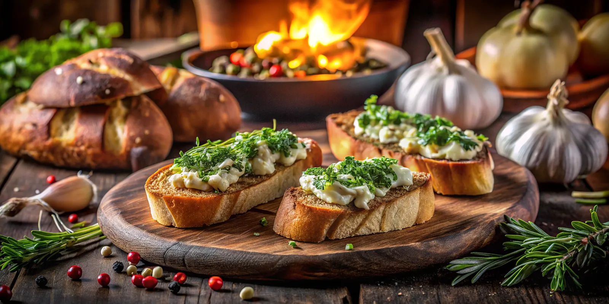

<section class="more-recipes">
  <div class="more-recipe__carousel">
    <div class="more-recipe__carousel-track">
      <article class="more-recipes__card">
        
        <h3 class="more-recipes__card-title">Garlic & Herb Bruschetta</h3>
        <p class="more-recipes__card-ingredients">
          1 Classic Baguette; 2 ripe tomatoes, diced; 2 cloves garlic, minced;
        </p>
      </article>
      <article class="more-recipes__card">
        
        <h3 class="more-recipes__card-title">Multigrain Bread Pudding</h3>
        <p class="more-recipes__card-ingredients">
          1 Multigrain Bread; 2 cups milk; 1 cup heavy cream; 4 eggs;
        </p>
      </article>
      <article class="more-recipes__card">
        
        <h3 class="more-recipes__card-title">Sourdough Avocado Toast</h3>
        <p class="more-recipes__card-ingredients">
          1 Sourdough Bread, sliced; 1 large ripe avocado; 1 tbsp lemon;
        </p>
      </article>
    </div>
    <!-- Дві кнопки для керування -->
    <button class="more-recipe__carousel-control prev">&#10094;</button>
    <button class="more-recipe__carousel-control next">&#10095;</button>
  </div>
</section>
